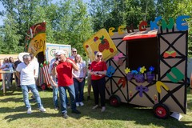
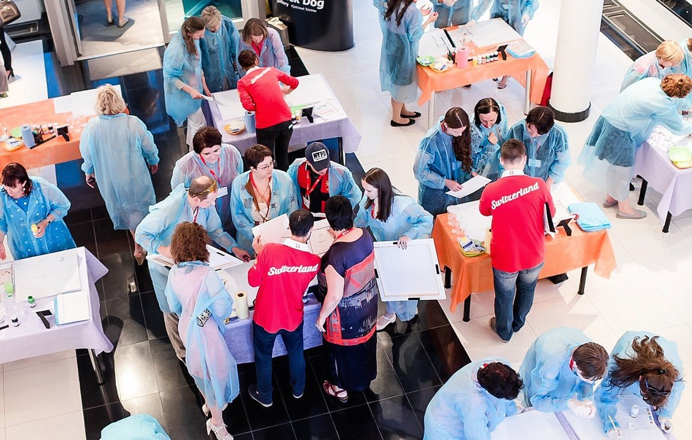
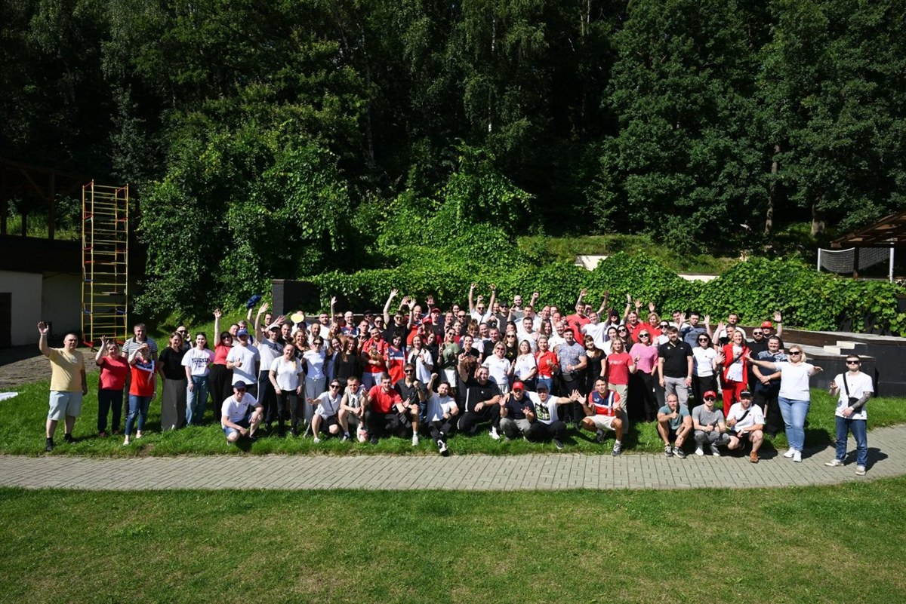
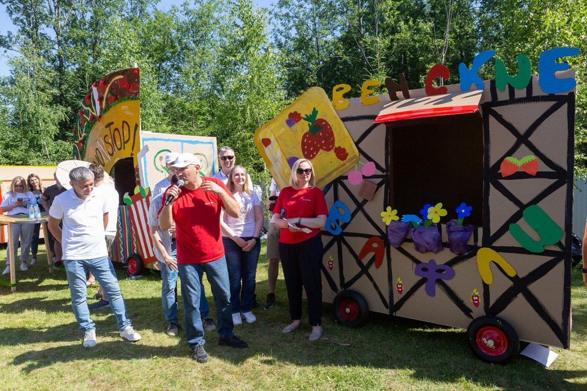

Материал для публикации на calend.ru. Word-файл: katalist-korporativnyj-kalendar.docx. Изображения лежат в этой же папке: anons-240x160.jpg, foto-1.jpg, foto-2.jpg, foto-3.jpg.
Новый год, 8 Марта, 23 Февраля, день компании, день профессии: что выбирать по задаче и размеру группы, чтобы праздник работал на команду.

anons-240x160.jpg: Команды на «Фестивале фудтраков»: зазывала у расписного фудтрака
Корпоративные даты стоят в календаре заранее, а формат у них чаще всего один: стол, тосты, музыка. Люди сидят с теми, с кем сидят в офисе, и через неделю праздник забыт. Ниже разберу, как подобрать формат под каждую дату и под размер группы.
Я Мария Варламова, генеральный директор ивент-агентства «Каталист». С 2010 года мы провели больше 5 000 проектов, у нас 50+ программ и 16 наград. У каждой даты своя задача, поэтому формат тоже нужен свой.
Календарь подсказывает, когда праздновать. Зачем, он не подсказывает. Выпишите для каждой даты одну задачу:
Под такую задачу формат выбирается за один разговор. Запрос «хотим что-нибудь весёлое» превращается в «нужен общий результат, который останется в офисе».
Хорошие даты декабря разбирают с сентября, но вечер можно собрать и за 1-2 недели. Если банкет остаётся, поставьте перед ним командную игру на 2-3 часа. Она перемешивает людей до того, как они сядут за столы.
Для темы календаря подойдёт «Нейро календарь». Каждая команда делает один месяц с помощью нейросетей: картинки в Midjourney, текст в ChatGPT, музыка в AIVA, озвучка, монтаж ролика. В тексты участники вставляют корпоративные даты и внутренние шутки своей компании. В финале ролики собираются в общий календарь. Программа идёт 2-2,5 часа в помещении для групп от 50 до 200 человек. Планшеты с нейросетями выдают команде, готовиться не нужно.
Если гостей больше 200 или нужна игра про сам год, в новогодней линейке есть квиз «Итоги года»: 5-7 раундов про ваш год, для групп от 50 до 600 человек.
Две даты разделяют 13 дней. Мы предлагаем отмечать их одним корпоративом: команды смешанные, играют все, программа занимает 2-3 часа между обедом и концом рабочего дня. Потом поздравления, подарки и общий стол. Делить праздник на «женский» и «мужской» день не нужно: повод подчёркивают оформление, награды и подарки. Так проще бюджету, и офис не останавливается дважды.
К 8 Марта берут творческие и гастрономические форматы. В «Корпоративной картине» команды рисуют участки одной большой картины и не знают общего сюжета, пока участки не сложат вместе. Поэтому соседям приходится договариваться. Сюжет мы придумываем под сферу компании, в него можно вложить ценности или историю. Картина размером от 3 метров остаётся в офисе. Программа идёт 2,5 часа для групп от 50 до 500 человек.

foto-2.jpg: «Корпоративная картина»: команды работают над своими частями общей картины, вид сверху
К 23 Февраля берут соревновательные и инженерные форматы. В «Мегаполисе» команды проектируют и строят город, в нём может быть больше 100 объектов, а районы должны сойтись в единую инфраструктуру. В финале город подключают к электросети и зажигают фонари. Программа идёт 2,5-3 часа для групп от 50 до 500 человек.
Бронируйте за 3-4 недели: выбор форматов шире. Для 23 Февраля это конец января. Экспресс-сборку за 1-2 недели тоже делаем, но выбор будет уже.
День рождения компании отмечают каждый год в дату основания, и задача у него внутренняя: поблагодарить людей, познакомить новичков со старожилами, подвести итоги отделов. Формат занимает 3-5 часов. Официальная часть короткая, 10-15 минут: слово руководителя и награды года. Остальное время команда играет, ужинает и общается.
Юбилей устроен иначе. Это круглая дата, 5, 10, 15, 20 или 25 лет, и на него зовут партнёров и клиентов. Официальная часть длиннее, 40-60 минут: фильм об истории, награждение сотрудников со стажем, слово основателя. Разницу видно по списку гостей. Только свои сотрудники: это день рождения компании. Сотрудники и внешние гости: юбилей.
В обоих случаях просите ведущего работать на ваших данных. Дайте ему события года и имена людей, тогда номинации и шутки прозвучат про вашу команду, а не из чужого сценария.

foto-1.jpg: Командный день на лужайке: общий кадр команды
Команды в игре собирает организатор, а не гости, поэтому в одной команде оказываются люди из разных отделов. Для финансовой дирекции «Райффайзенбанка» мы провели «Фестиваль фудтраков» на 350 человек. 20 команд построили каждая свой фудтрак, придумали ему кухню и название и продавали блюда за игровую валюту. Участники сами добавили то, чего не было в сценарии: один нанялся поваром к соседям, а одна команда принесла диваны и открыла рядом летнее кафе. Банк заказывал этот формат ещё три раза.

foto-3.jpg: «Фестиваль фудтраков»: участники у расписного фудтрака
Формат дня профессии лучше связать с тем, что люди делают на работе. Для проектных и инженерных профессий я бы смотрела на конструкторские игры, например «Машину Голдберга»: команды строят гигантскую цепную реакцию по принципу домино и запускают её целиком. Для творческих профессий подойдёт «Камера! Мотор!»: команды снимают рекламные ролики и мини-фильмы от идеи до монтажа и смотрят их на большом экране.
Программа на 2-3 часа не заменяет банкет. Подарки, угощение и кейтеринг считаются отдельно от игры. Измерять, стали ли люди дружнее после праздника, мы по таким датам не измеряли, поэтому данных об эффекте на удержание или вовлечённость у меня нет. И ещё одно ограничение: если людям не хватает денег или сил, праздник этого не исправит. Не назначайте его на выходной без согласия сотрудников, иначе его воспримут как обязанность.
Мария Варламова, генеральный директор ивент-агентства «Каталист»